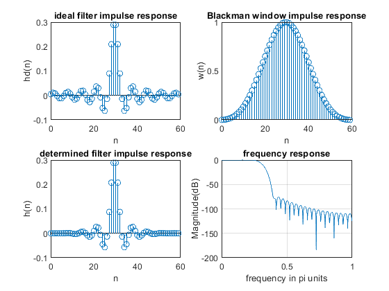
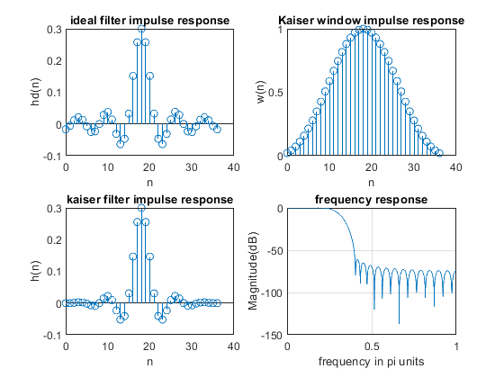
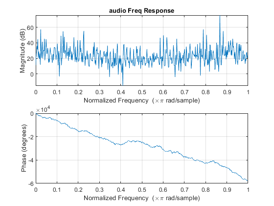
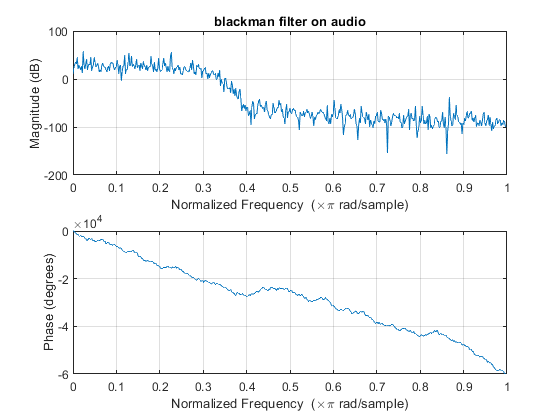
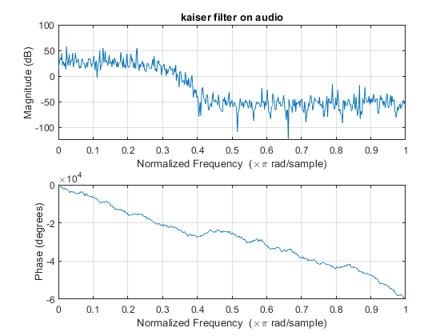

Digital Signal Processing MATLAB HW3 - q1
Professor: Dr. Sheikhzadeh Author: Maryam Barazande - 9723016 E-mail: maryambarazande7@gmail.com University: Amirkabir University of Technology
Contents
Clear recent data
clear; close all; clc;
FIR Filter Design
A. Windowing
Part 1
% define parameters wp = 0.2*pi; % passband frequency ws = 0.4*pi; % stopband frequency wc = (wp + ws)/2; % cutoff frequency
Blackman
since As = 60 dB we use * Blackman * filter (-74 dB)
M_b = 60 ; % M = (12*pi)/(0.2*pi) n = 0:1:M_b-1 ; hd_b = ideal_lp(wc,M_b); % ideal lowpass define for blackman w_bl = (blackman(M_b))'; % blackman window define with lenght M h_b = hd_b .* w_bl; % FIR Blackman filter % frequency responce [h1,w] = freqz(h_b,1); % Plot figure(1); subplot(2,2,1); stem(n,hd_b); title("ideal filter impulse response"); xlabel('n'); ylabel('hd(n)') subplot(2,2,2); stem(n,w_bl); title("Blackman window impulse response"); xlabel('n'); ylabel('w(n)'); subplot(2,2,3); stem(n,h_b); title("determined filter impulse response"); xlabel('n'); ylabel('h(n)'); subplot(2,2,4); plot(w/pi,20*log10(abs(h1))); title("frequency response"); xlabel('frequency in pi units'); ylabel('Magnitude(dB)'); grid; % Obtain The final value of Rp and As delta_w1 = 2*pi/1000; db = 20*log10((abs(h1)+eps)/max(abs(h1))); Rp_blackman = -(min(db(1:1:wp/delta_w1+1))); As_blackman = -round(max(db(ws/delta_w1+1:1:501)));
B.Kaiser
Part 2
As = 60; beta = 0.1102*(As-8.7); % beta = 5.6533 delta_w = ws - wp; M_k = round((As-7.95)/(2.285*delta_w)) +1; % M = 37 n_k=[0:1:M_k-1]; hd_k = ideal_lp(wc,M_k); % ideal lowpass define for kaiser w_kai = (kaiser(M_k,beta))'; % kaiser window with lenght M h_k = hd_k .* w_kai; % kaiser filter % frequency responce [h2,w] = freqz(h_k,1); % Plot figure(2); subplot(2,2,1); stem(n_k,hd_k); title("ideal filter impulse response"); xlabel('n'); ylabel('hd(n)') subplot(2,2,2); stem(n_k,w_kai); title("Kaiser window impulse response"); xlabel('n'); ylabel('w(n)'); subplot(2,2,3); stem(n_k,h_k); title("kaiser filter impulse response"); xlabel('n'); ylabel('h(n)'); subplot(2,2,4); plot(w/pi,20*log10(abs(h2))); title("frequency response"); xlabel('frequency in pi units'); ylabel('Magnitude(dB)'); grid; % Obtain The final value of Rp and As delta_w1 = 2*pi/1000; db2 = 20*log10((abs(h2)+eps)/max(abs(h2))); Rp_kaiser = -(min(db2(1:1:wp/delta_w1+1))); As_kaiser = -round(max(db2(ws/delta_w1+1:1:501)));
C.Filtering
Part 3
[audio , Fs] = audioread('HW3_Q1_multi_tone.wav'); audio = audio' ; figure(3); freqz(audio); title('audio Freq Response'); % Put blackman filter on audio audio_bl = conv(audio , h_b); figure(4); freqz(audio_bl); title('blackman filter on audio'); % Put Kaiser filter on audio audio_k = conv(audio , h_k); figure(5); freqz(audio_k); title('kaiser filter on audio');  
Ideal Low pass Design %%
function [hd] = ideal_lp(wc,M) n = [0:1:(M-1)]; alpha = (M-1)/2; m = n- alpha; fc = wc/pi; hd = fc*sinc(fc*m); end